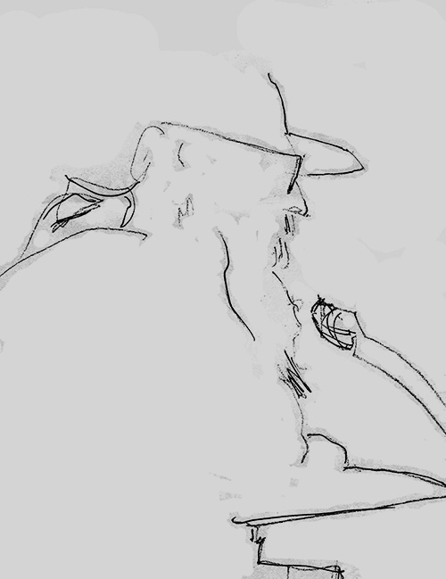

|
|


The Apparition at Large :
K.F. Pearson

{kind=link}
Matt
Simpson, Critical
Survey
The
clarity of consciousness behind such pieces as ‘His
Autopsy’, ‘His Funeral Oration’,
‘His Crossing
Over’, ‘His Epitaph’ and ‘His
Literary
Remains’ imparts a shiver.
Melissa Ashley, Australian Book Review |
||||||
Kevin Pearson at the Dan O'Connel, December 2015 (photo: Raffaella Torrenson)
Book Description
If you’ve heard of me,
it was a rumour.
The Apparition’s
Daybook as A
brilliant device... Insubstantiality made palpable in a series of
soliloquies uttered by a ghost. The Apparition of the title plays a
teasing, cavalier game of negatives… defamiliarization with
a
vengeance. There are freedoms a ghost can exercise that are denied to
mortals. They can observe without being observed, speak without being
heard; they can enjoy (and suffer) separation, and they can be in time
without being of it. Pearson plays a delightful puckish game.
Critical Survey, UK
The ghost is back in K.F. Pearson’s The Apparition At Large. Sexy without a body, caustic without a cause, a stateless commentator on an unfortunate eternity – it is through his deceased eyes that contemporary Australia ironically becomes alive. Enjoy his epigrams, his wit, his spiritual insights and aphorisms. With little poetry of this ilk produced today, The Apparition At Large deserves posthumous celebrity.

Line
drawing of K.F. (Kevin) Pearson by the late poet Geoffrey Eggleston
Cordite
publishes ‘His
Quarter’ by K.F. Pearson
from The Apparition At Large
with artwork by Mirranda Burton (28
October 2013)
Click the picture above to view the graphics
Click the picture above to view the graphics
ISBN 1876044489
Published 2006
101 pgs
Book Sample
|
HIS QUARTER
If you’ve heard of me it was a rumour. I have never been distinguished in the foreground or against a backdrop and the beggars are out in force tonight as I am in the cut-glass air on the street where tables flourish on footpaths and blue smoke rises like the end of thought. Here, where the lost seek restitution and the monied, overheard, can plot a new assault on real estate, I drift and sometimes take a seat as unoccupied as a vacant wish, and lift a lighter to a cigarette, the flame as brief as an epitaph. Being incognito and unknown the options dictate I should sit, my prowl from place to another place cruelling a clung-to outside hope that one who imagines me may stop knowing to lose the sense of the street is to lose the appetite for life. PROEM
Consult my mirror if you would acquaint yourself with what, or what is not possible while frogs are wetly green and waves are like the breathing of the ocean; or there, as absolutely clear as vodka, you’ll find a tall glass holding water you could be tempted set a rose in, studying its angled stem’s refraction. There will be objects, as on a dressing table: a hairbrush, a compact, or rouge or what you feel, as actor, you will need to face the drama of openness required to be my reader. When, prepared, you allow your eyes to pass along my lines, you’re in my looking glass. HIS CIRCUS ACT
Costume Drama
My shoes are bigger than my feet. The one is white, the other black and I stumble in between. My sole is loose; I’m down at heel. My pantaloons and shirts are floppy, the diamond patterns in red and bruise. I stand in the centre of the sawdust, my white lips four times human lips. Against the grain, when I join in, your laughter makes my pompoms shake. A tragedian in civilian garb, I keep one skittle in the air. Juggling
The good is near, if it seems you smell a musk rose, you see a blue vase. Clowning
Contused white pompommed pantaloons; patent leather shoes with lacquer gone, my self-surgery’s oblique in broad sight gag, or when I speak. The knee upon which I will break like kindling’s when you get my joke. |
HIS BOOK
Perhaps the doppelgänger of an author, I leave brief words on coasters in a bar, not given, you understand, to a visual doodle. My mode is silence, or the audible. In coasters I’ve a preference for the oval. Zero is represented by a circle: I nudge a little way apart from there but cannot sign a name upon a square. Like the human body, biodegradable, a coaster is not long upon a table. On one I wrote, with something of a flourish: ‘Duende’, I have heard, is ‘ghost’ in Spanish. TWO COASTERS
His Mirror
Any beauty like perception is not in the eye of its beholder alone, when conjunctions of shafts of wry light across a surface dazzle, or put in shadow, the subject seen; or the circumstance of the viewer, hurt and retreating or predisposed to see, affects the way you look; but I, deprived of recognition, day to day, appreciate a glance from any. His Oriel Windows are open even when they are closed their transparent glass permits us to look inside or we to look out. They are my image, my stern oubliette sole circle of sunlight no prisoner forgets when released free of guilt or holding regrets. Before you, come from a previous death, a sand that is bled of its colour, I am noticed or unnoticed, a pane to see through as easy as your windows. |
Reviews
The Apparition At Large
Homer Rieth
Apparitions appear in many guises - as ghost or phantom, spirit or shadow, as spectre, spook or wraith, as shade or sprite - in short, as existential ‘other’. However, the apparition in K.F. Pearson’s new collection of poems seems at moments to (dis)embody or (dis)incorporate elements of even more arcane conceptions - the ancestral manes or even the eidolon lurking behind the arras of Greek and medieval philosophy. In K.F. Pearson’s notation, the ‘duende’ of Andalusian folklore is a fair bet. We are warned, quite early on:
Like the human body,
biodegradable,
a coaster is not long upon a table.
On one I wrote, with something of a flourish:
‘Duende’, I have heard, is ‘ghost’ in Spanish.
‘His Book’
a coaster is not long upon a table.
On one I wrote, with something of a flourish:
‘Duende’, I have heard, is ‘ghost’ in Spanish.
‘His Book’
This apparition, it is clear early on, (dis)sembles its very apparentness: playful yet rueful, quixotic and recondite, the apparition is also funny and mordantly matter-of-fact. There are shades at every turn in this new book of poems, Pearson’s sixth collection, of a Borgesian old world sophistication coming to terms with new world order anarchies. The Apparition At Large reflects, in part, the widening influence of postmodernist discords and, at the same time, a peculiarly Australian temper in its comedic configurations. The poet’s urbane and capricious turns owe something to a tradition of self-deprecation in the broader field of Australian humour. The Apparition At Large is, then, a work of considerable strengths: in its seamless dexterity and wit, its sparkling verbal glissades and its degree of perceptiveness of unsettling accuracy. It is also a work of great verbal finesse and sophistication. The volume may, perhaps, appear at some figment of margin in certain quarters (being an Australian coup de plume) and hence stands, as so much of the literature of this continent often does, in danger of being underestimated.
The collection does not merely carry on from where Pearson’s earlier The Apparition’s Daybook (1995) left off, but represents a significant imaginative leap across the psychic terrain of postmodernist-riven discontinuities between the factious and the purely fictive. The apparition of The Daybook has lost none of his mysteriousness and sense of mischief. In this new book, however, it is clear that both the author and his alter ego have taken off the gloves: this is poetry of prevailingly ambivalent wit, but also of heightened poignancy and seriousness. Observe, for instance, the art of seeing. In Daybook there is a nicely turned figure that is the sum of the poem itself: If I could do / a single thing / I’d not forget / being seen by you/is one thing / I’d not forget (One Thing). In the new collection, the underlying problematic has deepened; the language is correspondingly denser, geared to the shifts of gyp and dupe, in which the lexemes are never quite what you expect:
My transit camp is
‘when’ not ‘where’.
I have been ‘was’ and may be ‘am’
if ‘whether’ turns on the wind to ‘sure’.
My place is neither ‘here’ nor ‘there’,
and could not ‘be’ if ‘is’ is not.
‘Somewhere’ presumes an apt ‘sometime’
when a ‘here’ is conjunct with a ‘now’,
and who knows ‘what’ if there’s an ‘if’.
A ‘may’ could seguidilla to its ‘be’;
or ‘perhaps’ confront its axeman ‘not’.
‘His Passport Application’
I have been ‘was’ and may be ‘am’
if ‘whether’ turns on the wind to ‘sure’.
My place is neither ‘here’ nor ‘there’,
and could not ‘be’ if ‘is’ is not.
‘Somewhere’ presumes an apt ‘sometime’
when a ‘here’ is conjunct with a ‘now’,
and who knows ‘what’ if there’s an ‘if’.
A ‘may’ could seguidilla to its ‘be’;
or ‘perhaps’ confront its axeman ‘not’.
‘His Passport Application’
In his earlier volume, Melbourne Elegies (1999), Pearson had confided: ‘You cannot help but know the shock of some impacts at once...’ (‘History Makers’). It is an operative principle here, as everywhere in this poet’s oeuvre. There are, nevertheless, poems in this new book that demonstrate the reverse - that sometimes it may, indeed, seem to take forever for an experience to ‘shock’ us into knowing - as may be observed in poems such as ‘His Swatch’ and ‘His Analogy’ or the powerful burlesque of ‘His Literary Reputation’ and His Interrogators’, whose subtle verbal ploys resist piecemeal quotation. Mostly, though, the sinewy pleasures of Pearson’s verse take about as long as it takes to engage with the syntactic thrust and parry that (together with his aphoristic flair and verbal precision) are the hallmarks of this poet’s style. In poems such as ‘His Geography’, ‘His Companion Arts’ and ‘His Letter Of Support’, Pearson’s signature blend of hard-boiled humour and ironic introspection is augmented by a delicate and often delightful whimsy. There are also poems of an almost unearthly cast: self-revealing and yet reticent, couched in terms of pass and impasse, point and counterpoint, in a prosody which for all its reach of clarity and firmness, is full of beguiling ambiguities:
If if were once
before is later,
the mirror says
where we retreat.
When when is once
upon a time,
the that that was
is less than if.
‘His Coin’
before is later,
the mirror says
where we retreat.
When when is once
upon a time,
the that that was
is less than if.
‘His Coin’
The capacity to sustain such equipoise (of intellect and feeling) is a touchstone of the work of any artists whose aims are as ambitious as their methods. The Apparition At Large occasionally strays into tricks of syntax or ‘snookers’ itself in an excess of its own verbal intricacies; but these are the faults of strong virtues: in Pearson’s case, a versification that is both highly intelligent and engaging and which is also quickened by a preoccupation with the sculptural and tonal possibilities of an ulterior voice. The crypto-autobiographical nature of this undertaking is deftly camouflaged by the undeniable charm of the speaking voice with its prevailing air of wry detachment. These are evidences of a mature and crafted style.
In Poetry and the World Robert Pinksy has observed how tentative (and yet how sure) the presentiment is that separates a poetry that succeeds from one that fails. He has remarked that: ‘...despite all the complexities of literary theory, for all the ingenuities of ambition and expectation, the trouble with most poems that fail... may be described simply: they are not interesting enough to impart conviction.’ There is not a single poem, in The Apparition At Large, that is less than interesting and in which the level of conviction the reader experiences is not commensurate with that of the poems themselves. To Pinsky’s formula for poems that are likely to succeed, the poems in this collection invariably conform: they are, in Pinsky’s terms, ‘surprising’, ‘musical’ and ‘revealing’; they also manifestly sustain a level of ‘interest’ that is compelling and which, for Pinsky (as also for this reviewer) means nothing less than, as Pinksy has concluded, ‘the free acceptance of the gift of pleasure’.
This is a notable achievement, not least since the majority of the poems (as their titles indicate) consist of the radial musings of an acutely self-conscious alter ego (if an apparition may be so described - since, however elusive, it is palpably present throughout); this far from pallid entity declares every poem as ‘his’ - ‘His Passing’, ‘His Progress’, ‘His Fingerprint’, ‘His Self Portrait’, etc. Only a few pieces, such as ‘View From His Barstool; His Impromptu Diet’ (where the personal pronoun is still in control) ‘The Other’s Dressing Table’ and ‘The Magician’s Position’ deviate from this pattern of ghostly self-absorption and clever shadow play.
The personal (even confessional) tenor of the apparition’s ruminations, as well as the ironic aloofness of his conceits, therefore, serve as decisive ingredients in the plotting of the book’s trajectory. A more complex question, however, centres on three poems whose titles intrigue: ‘A Critical Guide to Australian Poetry’, ‘A Poet He Knew’, ‘God’s Words to Him’ and ‘A Defence of His Own Life’. The first of these is Catullan in its epigrammatic brevity and cynicism:
I’ve a single
reference in your index.
Always the footnote, never the text.
Always the footnote, never the text.
The second, ‘God’s Words to Him’ (again the prevalent pronoun) is slightly longer and represents a reply to the poem immediately before it, ‘His Words to God’, an unevenly rhymed poem; as a pair, they put one in mind of Yeats’ ‘Crazy Jane Talks Wife the Bishop’. However, Pearson’s rhymes here are somewhat diffident and the pith of both ‘God’s Words to Him’ and its antiphonal is something of a letdown: the idiom is etiolated after the raised expectations created by the dialogic possibilities signalled in the titles. They seem to me the least convincing poems in the book. The remaining piece, ‘A Defence of His Own Life’ (a further epigrammatic construction) is the collection’s final poem and is splendid. It is reminiscent of the terseness of the ‘War and Consequence’ movement in Pearson’s justly admired translations from the Spanish, Passion & War: A Flamenco Libretto (1995):
There is a comeliness in a
shadow
the person casting it can’t match.
the person casting it can’t match.
Three of the volume’s best poems are conspicuous for their assured handling of theme and mood: ‘He Remembers His Skeleton’ and ‘A Poet Who Knew Him’. In the first the apparition comes as close as anywhere in the book to making itself manifest as flesh and blood. The result is a level of understatement, keyed to an effortless articulation:
A family death you think
you’ve overcome
by ritual of good burial and procedure
of mourning as a group till talking’s done,
revisits when there’s unexpected pressure
from another quarter and simple tears
are physical water streaming on a face
that wishes it could not be so embarrassed
by ritual of good burial and procedure
of mourning as a group till talking’s done,
revisits when there’s unexpected pressure
from another quarter and simple tears
are physical water streaming on a face
that wishes it could not be so embarrassed
In the second poem, the pressure of personal loss and suffering is registered in a movement that controls the argument and then enlarges it with superb restraint:
There are not many,
there’s not ten,
whose character in a way precedes them
but they are those, who when without
them, they occupy our thought
in the bland times of our time.
whose character in a way precedes them
but they are those, who when without
them, they occupy our thought
in the bland times of our time.
The third of this group of poems is the book’s penultimate offering: ‘His Title Poem’ and is dedicated to the acclaimed Melbourne poet, Jennifer Harrison; its tonalities are intimate yet declarative, such as to suggest that Harrison may be in the relation of muse to the shaping of Pearson’s wider vision and also (in some powerfully implied sense) the apparition’s final (and perhaps only) unmasker:
...I, reverso of your forgetting,
recall each instant of your passing
by, my friend, who made me feel awake,
or nearly so, my found European hands
gesticulated as our talk took on
art we shared with an equal passion.
The sender who receives can doubly send.
recall each instant of your passing
by, my friend, who made me feel awake,
or nearly so, my found European hands
gesticulated as our talk took on
art we shared with an equal passion.
The sender who receives can doubly send.
Altogether, this is a collection of great imaginative scope and resilience. To have achieved a progression of soliloquies fertile with intimations of an inner life, of shared secrets and solitudes (such as this or any apparition must endure) in an idiom of such adroit and engaging accents, is a bold execution. As an observer, in cadences as droll as the verse itself has already declared on the book’s back cover, ‘The Apparition At Large deserves posthumous celebrity’; indeed - though one may trust that a poet of such accomplishments as Pearson possesses, one who is ‘at large’ in the haunts of his own art in as assured a manner as his memorable creation, should be spared such a preternatural (though richly merited) fame.
The Apparition At Large
Melissa Ashley (author and poet)
Australian Book Review, Feb 2007, No. 288
The Apparition at Large is Black Pepper’s K.F. Pearson’s second outing as the commentating enigma, most recently encountered in The Apparition’s Daybook (1995). Opening poems map the identity’s regular ‘haunts’ - the bars and cafés of inner-Melbourne - via evocative sketches of daily life’s unexpected sensuality: ‘A colour can completely drench our consciousness.’ Transient comforts and pleasures, while lingered upon, are undercut by the apparition’s humiliating invisibility and insubstantiality.
In several poems, the apparition draws attention to Pearson’s critical reception as a poet. His self-deprecation, however, threads a precarious line between black humour and self-indulgence, as in the poem ‘His Author’:
I’m not the twin of
whom I come from.
My author used to think himself a poet
...I know better, being his creation.
He doesn’t have the powers he thinks he has.
My author used to think himself a poet
...I know better, being his creation.
He doesn’t have the powers he thinks he has.
Pearson oscillates between celebrating and mourning the apparition’s position as excavator and witness to what lingers at the margin’s edge.
Towards the end of the collection, poems address questions of mortality. The tone is sad and melancholy, which is appropriate given the passing of Pearson’s contemporaries Patrick Alexander and Shelton Lea. The clarity of consciousness behind such pieces as ‘His Autopsy’, ‘His Funeral Oration’, ‘His Crossing Over’, ‘His Epitaph’ and ‘His Literary Remains’ imparts a shiver. But the spirit is greater than the flesh, as suggested by the lovely line: ‘A surface is the skin of what’s inside.’ The disquieting focus of The Apparition At Large is of someone casting a warm, clear eye - Pearson could never be cold - over the actions and achievements of his life, including his considerable legacy as a poetry publisher and practitioner.
At times, the use of traditional forms such as iambic metre and rhyme compromised this reader’s negotiation of the text. That said, the poet’s pleasure in the language games of riddling and punning were a delight.
The Apparition At Large
Geoff Page
Radio National’s The Book Show 2006
In Apia with its harbour, and
papaya in the morning,
when seated on a cane chair at a cane-strung table,
I’m as placid as the ripples of iced lime juice with water.
A lonely drift-net fisherman casts a perfect arc of net,
and, patient, lets it settle before he’ll draw it in.
I’m reading as I breakfast Vasari’s Lives of the Artists.
There are monologues in them an earlier poet could sense.
I’m given fresh green-coconut juice gods can’t go without.
But, ah! to be on an asphalt footpath and you pull up a chair.
‘And Abroad’
when seated on a cane chair at a cane-strung table,
I’m as placid as the ripples of iced lime juice with water.
A lonely drift-net fisherman casts a perfect arc of net,
and, patient, lets it settle before he’ll draw it in.
I’m reading as I breakfast Vasari’s Lives of the Artists.
There are monologues in them an earlier poet could sense.
I’m given fresh green-coconut juice gods can’t go without.
But, ah! to be on an asphalt footpath and you pull up a chair.
‘And Abroad’
That poem, ‘And Abroad’, is one of two called ‘His Postcards’ in K.F. Pearson’s new book, The Apparition at Large. Although it’s not obvious here, the narrator is not Pearson himself but an apparition using the poet as an amanuensis. He is not so much a ghost given to scaring people as ‘a voice of gaps and distances’, as Susan Hancock said of this character in the book’s 1995 predecessor, The Apparition’s Daybook.
In ‘And Abroad’ we have a good example of Pearson’s rhythmic control and his sense of cadence. The lines (in this case, but not always) are long and leisurely, a sort of loose hexameter. The apparition is meant to be having a good time in Samoa but, in the manner of quite a few poets before him, would rather be back in town with a friend or lover.
This is one of the several pleasures of Pearson’s book, the sense in which he reminds you of other, more distant poets - some of whom we are in danger of forgetting a little. Most typically Pearson writes in traditional forms with a strong sense of the iambic. There are poems here that remind one of the earlier Theodore Roethke - and others (where the sense of a constant narrator is particularly strong) of John Berryman’s Dream Songs.
And the echoes go way back before the twentieth century too. As the ‘apparition’ complains in ‘His Literary Reputation’, ‘The skill-less, boring, unrhythmical and glib / occupy the Golan Heights of fashion’. This is exactly what Pearson wants to get away from even though he thinks it may have been to his cost. The poem concludes: ‘I think the power of lyric is its clearness; / explanation is the opposite of worth. / Reincarnated, I would be obscure.’
With his ‘apparition’ persona, Pearson is working a profitable vein here. There is a sense in which we all feel insubstantial, almost invisible - and not just at a lunch counter when everyone but you is being served. Pearson has caught well our sense of ephemerality and how soon we are doomed to exist only in the memories of those who knew us - and, even there, not for long. A sense of this invisibility, both present and foreseen, is found in ‘The Apparition’s Hat’ - which begins: ‘ The hat is worn. There’s none beneath. / It walks authoritatively down the street, / half pauses by a fading honeysuckle, / memory invading thought a little...’
Convincingly, but perhaps disconcertingly, there’s also a sense in which the ‘apparition’’s alienation seems to stand in for the poet’s own. In the poem, ‘His Author’, Pearson has the ‘apparition’ say: ‘I’m not the twin of whom I come from. / My author used to think himself a poet, / and somewhat of a scholar of that art. / I know better, being his creation. / He doesn’t have the powers he thinks he has. / He slumps about in bars to stifle fears / that he has wasted youth and given years / solely to find the critics ill at ease.’
This would seem to be showing his reviewers a very soft underbelly indeed but Pearson has his answer ready. In ‘To His Reviewer’ the ‘apparition’ retorts: ‘Only those words said about me / are more ephemeral than I am.’ Another two-liner on a comparable theme is ‘A Critical Guide to Australian Poetry’: ‘I’ve a single reference in your index. / Always the footnote, never the text.’ In the poem, ‘His Literary Reputation’, the ‘apparition’ confesses: ‘I have given pleasure to about a dozen, / none of whom was an opinion maker. / Anthologists have never bothered.’
It is hard to say whether this slightly self-pitying strategy reinforces or undercuts the virtues of the book’s best poems where Pearson really does inhabit his shadowy persona and gives his (surely more than a dozen) readers a healthy sense of their own transience and immateriality. At times, as with the poem we started with, Pearson’s persona can be really moving. ‘But, ah, to be on an asphalt footpath and you pull up a chair.’
Certainly, most of the time, he is witty and ironic - and not always, by any means, at his own expense. One shouldn’t understate his lyrical capacity, either. The ‘apparition’’s sensuous relish for quality food and drink (or perhaps the memory of them) is almost alarmingly disconcerting.
K.F. (Kevin)
Pearson, in
his other
life, is also the co-publisher of one of the most impressive of the
country’s small poetry presses, Black Pepper. It would be sad
to
think that, in the process of publishing other people’s work,
the
quality of Pearson’s own poetry has been somewhat overlooked.
Let’s hope not.